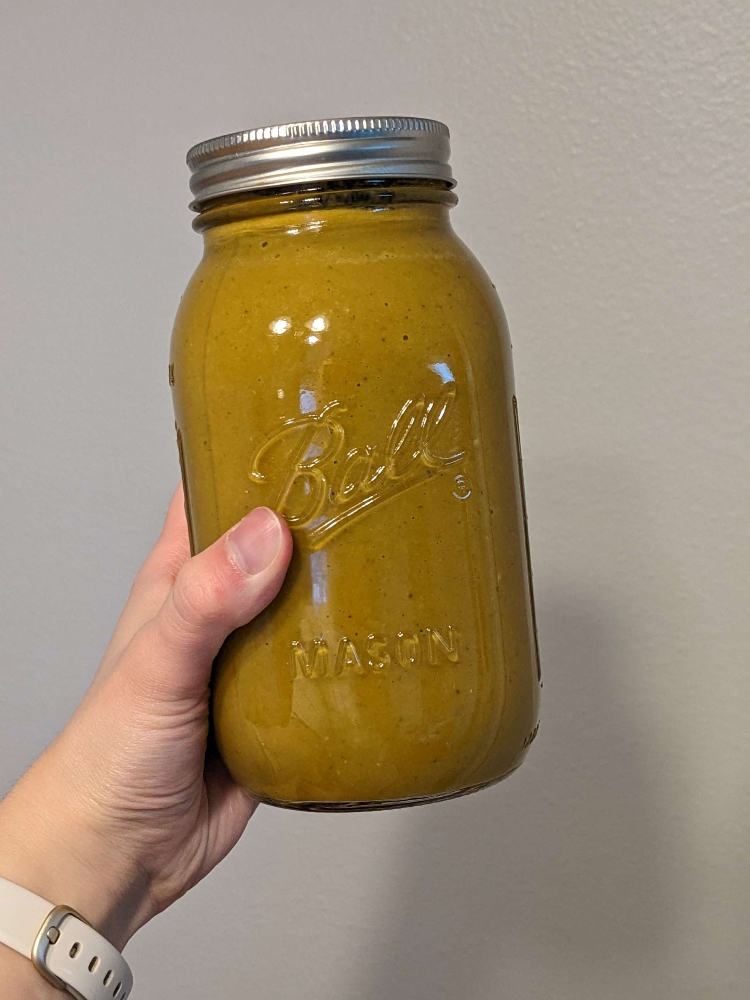

Orange Sauce

"An SS Tier Pasta Sauce
This orange sauce is delicious, rich, flavorful and packed with veggies.
You won't want to miss out on the experience of spooning this over warm pasta and dumping a mountain of parmesan on it.
Ingredients
- 6 tomatoes
- 1 large onion
- 1-2 bell peppers
- 1-3 jalapeno peppers
- one head of garlic, whole but with the top chopped off
- olive oil
- salt
- pepper
- juice of one lemon
steps
- chop the veggies into large chunks
- drizzle with olive oil and sprinkle generously with salt
- in a 400* oven, roast for approximately 30 minutes, or until everything is very soft, tomato skins are split, and veggie tips are blackened.
- allow to cool; dump all veggies except garlic in a blender.
- Squeeze garlic out of its shells and into the blender.
- squeeze juice of one lemon into the blender.
- blend to your desired smoothness, adding olive oil for a richer texture
- taste for salt and lemon juice etc.
- Serve over pasta or as a sandwich spread or a dip or whatever you want.